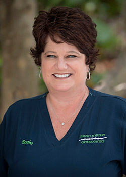

Meet the Team
We recognize that all our patients are unique and deserve to receive orthodontic care that reflects their individual needs. Our experienced and talented team is committed to working with you and your family to create a comfortable, stress-free, and rewarding orthodontic experience every time you visit our practice.
We are pleased to welcome you and your family, and we look forward to working with you.
Brandi
Scheduling Coordinator
I am an appointment coordinator with Insoft & Hurst Orthodontics, and enjoy helping patients with scheduling and answering questions. I love working with our patients and watching them achieve the smile they deserve! We have such a wonderful team here with Dr. Insoft and Dr. Hurst! It makes coming to work that much more fun!
I was born and raised in St. Pete and have two beautiful daughters named Alexa and Hailey. I love spending my free time with my girls!
Brittney
Treatment Coordinator/Financial Coordinator
As one of the treatment coordinators for our office, I get the pleasure of working with children and adults who desire a healthy, beautiful smile. The doctors and I meet with new patients and provide an individualized treatment plan, as well as answer any and all questions that you may have in order to help make you feel comfortable and well informed. I also hold the position of financial coordinator for the office and work with our patients to help choose a financial plan that works best for each individual and their family. Our team takes great pride in our work—helping to create wonderful smiles. We strive to create a happy, welcoming atmosphere that will make you feel as if you’re part of our family.
I have a wonderful fiancé Eric and two fur babies. We moved to Florida from the Atlanta area in June 2017. In our free time, we enjoy spending time exploring St. Pete with our friends.
Candice
Orthodontic Assistant/Insurance Coordinator
I have been a member of the Insoft & Hurst team since 2002. My favorite part of orthodontics is watching the transformation of crowded teeth to an amazing, perfect smile! To see someone’s personality and confidence change as their smile transforms is very inspiring. We have an amazing team here that is like a family. We laugh a lot and have a lot of fun in our day. It makes every day a happy and relaxing environment for all of our patients.
I am a St. Pete native and Gator grad! My husband Dave and I have four amazing children, a kitty named Sadie, and a spunky English bulldog named Ruby. We enjoy the beach, fishing, boating, and all of the outdoor activities our beautiful city has to offer. We are also very active in our church and our community.
Christina
Orthodontic Assistant/Scheduling Coordinator
I started with Drs. Insoft and Hurst as an orthodontic assistant in 2005 with five years previous orthodontic experience. I love that I help the doctors create beautiful smiles that last a lifetime! It is wonderful to see our patients grow and gain confidence as their smiles improve. We are like one big, happy family. I truly love the people I work with. I love my job and the work we do.
I have two children, Destiny and Josh, who I spend most of my free time with. Destiny started college this past year at the University of Central Florida, and I couldn’t be more proud of her accomplishments! I also enjoy volunteering for the community, cooking, reading, and the “salt life”!
Iris
Orthodontic Assistant
I am originally from Cuba and have always been passionate about beautiful smiles! When I moved to the United States, I finally had the opportunity to become the person I really wanted to be! I love orthodontics because I love helping people!
My husband Jorge and I have two Chihuahua babies named Mini and Hazel.
Jen
Orthodontic Assistant
I have been an orthodontic assistant since 2007 and very much enjoy working for Drs. Insoft and Hurst. It is very rewarding to see smiles transform and helping our patients gain confidence. Drs. Insoft and Hurst really care about their patients and the treatment they receive. I’m proud to be a part of this team.
When I’m not at the office, I enjoy spending time with my husband Dave and our new baby girl Zoe!
Kirsten
Orthodontic Assistant
I started as a patient with Drs. Insoft and Hurst and decided to become an orthodontic assistant in 2014. Watching patients learn to love their smiles is so fulfilling to me! Our doctors are so passionate and we all strive to make each and every one of our patients feel as if they are a part of our orthodontic family!
I have a sweet little fur baby named Daisy. When I’m not at the office, I enjoy going on adventures, watching movies, and spending time with my family
Nancy
Insurance Coordinator
As our insurance coordinator, with my 40+ years of orthodontic knowledge, I am able to answer many questions and concerns for our patients regarding insurance and otherwise. I love observing the personality changes and patient’s self-esteem once we have transformed their smile! Drs. Insoft and Hurst are exceptional orthodontists that are very caring. Our team is very fun to work with and I look forward to coming to work every day.
My husband, John, and I have four children and six wonderful grandchildren. I enjoy going to church, power walking, and watching sports. Our team also loves the fact that I enjoy baking cakes for their birthdays!
Natalie
Orthodontic Assistant
I knew immediately after graduating from dental assisting school that I wanted to be an orthodontic assistant! To me, orthodontics is a very rewarding career! I love seeing the transformation and being able to see our patients smile with confidence!
I was born and raised in Lynn, MA and have been living in St. Petersburg now for more than ten years. I am very family oriented and enjoy spending time with my boyfriend, friends, and little Chihuahua Noah.
Pam
Practice Manager
I moved to Florida from Wisconsin in 1996 when I joined Drs. Insoft and Hurst as a certified orthodontic assistant. Since then, this practice has been a very important part of my life. From clinical assisting to scheduling and treatment coordinating, I truly love every aspect of orthodontics and spending the days with my work family! I enjoy explaining our patients’ treatment needs and guiding them through each step of their orthodontic experience to create the perfect smile they deserve! My work family has a great attitude and extremely fun-loving persona that is completely obvious the first time you visit our office. We truly care about each other and each and every one of our patients which creates an atmosphere like no other office!!
My husband Michael and I have two children Makenna and Donovan and two dogs Blue and Dugan. We spend most of our free time on the water boating with friends and family and enjoying the outdoors.

Susie
Scheduling/Marketing Coordinator
I have worked at the front desk at our Seminole/St. Pete offices and been the marketing coordinator for Insoft & Hurst Orthodontics since 2005. I enjoy working with our doctors and team and representing this amazing practice to the community! Drs. Insoft and Hurst are true innovators! They are loyal to their team and their patients! We are truly like a family here!
My husband Tom and I have two daughters Madison and Gillian and a dog named Molly. I spend my free time shopping, reading, and spending time with family traveling.
Becky
Orthodontic Assistant/Dental Hygienist
I have been an orthodontic Assistant with Insoft & Hurst Orthodontics since 1994. They supported my decision to further my dental career by attending and then graduating from dental hygiene school in 2000. I enjoyed working with Drs. Insoft and Hurst so much that I decided to do hygiene part-time in conjunction with orthodontics! I comfort and support our patients throughout the course of their treatment with braces or Invisalign® until they’ve achieved a new and beautiful smile. I love watching their personalities transform as they gain the confidence to smile proudly.
My husband Paul and son Jaxson and I love spending time as a family doing CrossFit and fishing.
 Back to Top
Back to Top